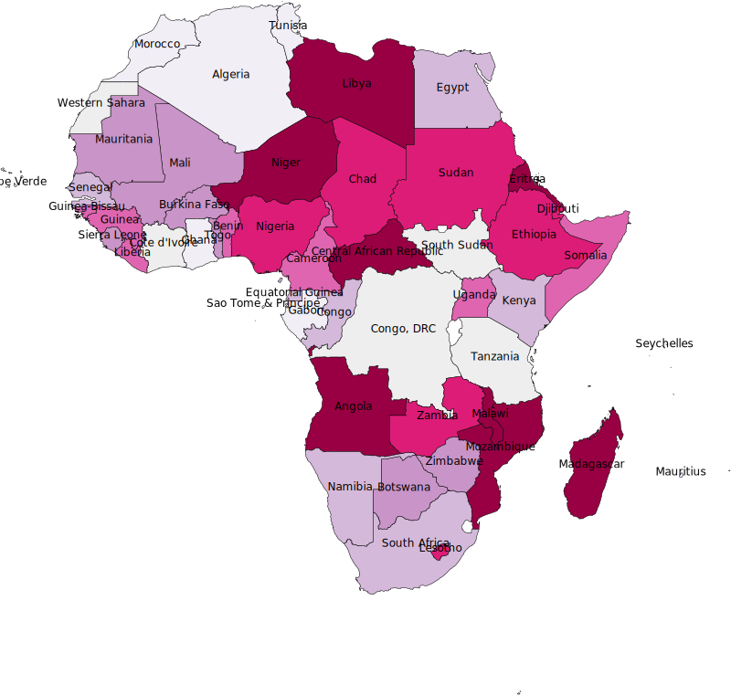
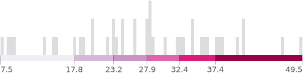

Source: Center for International Earth Science Information Network - CIESIN - Columbia University and CUNY Institute for Demographic Research (CIDR), City University of New York. 2020. Low Elevation Coastal Zone (LECZ) Urban-Rural Population and Land Area Estimates, Version 3 Preliminary Release (available at http://www.ciesin.columbia.edu/data/lecz-urban-rural-population-land-area-estimates-v3/, accessed 22 September 2020), unless otherwise indicated. Data refer to 2015 population.
Prevalence of Stunting
Share of Population (%)


Source: UNICEF/WHO/World Bank Joint Child Malnutrition Estimates - Country Level Models, April 2021 (dataset received 18 February 2021). Data refer to 2019.